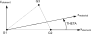

Tria3R - Triangular element with reduced integration (pyfe3d.tria3r)#
The module has three classes: Tria3RData, with the sizes of the
sparse arrays that one element fills; Tria3RProbe, with the
buffers in element coordinates that one or more elements share; and
Tria3R, the element. The update_* methods of Tria3R
write the element contributions in sparse row, column and value arrays, from
the positions given by its init_k_* attributes, or add them to a global
internal force vector.
Three-node triangular shell element with 6 degrees-of-freedom per node, \(u\), \(v\), \(w\), \(r_x\), \(r_y\), \(r_z\), with reduced integration.
The transverse shear stiffnesses A44, A45 and A55 of the
pyfe3d.shellprop.ShellProp are reduced by a factor controlled by the
alpha_shear_locking attribute of Tria3R, 0.7 by default,
which is a parameter to be verified per problem class and not a constant of
the element. pyfe3d.tria3dsg.Tria3DSG takes no such parameter and is
the triangle to reach for by default; this one is kept for continuity with
results obtained before it, and for the comparison itself.
The drilling rotation \(r_z\) is given stiffness by one of two models, selected
with the drilling_model attribute of Tria3R: the physics-based
default, for which the nodal moments about the shell normal recovered in the
internal force vector are physical and no user parameter is involved, and a
fictitious penalty scaled by K6ROT, the default before version 0.10.0,
whose only purpose is to remove the singularity of the drilling
degree-of-freedom. Geometrically nonlinear analyses with the von Karman
membrane strains are supported by Tria3R.update_fint() with
nonlinear=1, Tria3R.update_KCNL() and Tria3R.update_KG().
Notes#
Triangular element with reduced integration, where a single point at
the centroid (\(S1=S2=S3=1/3\)) is evaluated with the weight \(1/2\) times the
Jacobian determinant \(2 A_e\), i.e. the area \(A_e\), preventing shear
locking. The drilling stiffness is evaluated with
full integration. Under the default drilling_model = 0 this applies to
the terms of the Allman enrichment, the Hughes-Brezzi term being integrated
with a single point at the centroid, see the drilling stiffness below.
The transverse shear stiffnesses \(A_{44}\), \(A_{45}\) and \(A_{55}\) are stabilised with the scalar factor that Lyly, Stenberg and Vihinen [1] proposed for the MITC4 quadrilateral, with the longest edge of the element as its size (their Eq. (3.12)), called Stenberg’s method by Bischoff and Bletzinger [2] (Sec. 3.1), in the form adopted by Castro et al. [3], with the longest edge of the triangle as the element size, where the transverse shear terms are changed as per Eq. (26) in Castro et al., here repeated for convenience:
with \(factor\) defined as:
factor = frac{alpha ell^2}{h^2}
where \(\alpha\) is a positive constant parameters (see the alpha_shear_locking attribute),
\(\ell\) is the longest edge of the corresponding triangle, and \(h\) the total thickness of the element.
Note that \(factor \rightarrow 0\) as the element size shrinks, so the true stiffness is recovered under mesh refinement and the scheme is consistent. The rate matters though: \(\ell < 0.12 h\) is needed for the stabilised stiffness to be within 1 per cent of the true one, which for a thin shell is not a mesh anyone would build. What makes the scheme legitimate all the same is that in a load-driven problem the error it introduces is \(factor \times f_s\), with \(f_s\) the shear fraction of the response, and for a plate or beam of span \(L\) discretised with \(n\) elements
so the thickness cancels and the error behaves as an ordinary
\(O(1/n^2)\) discretisation error. This is measured in
tests/test_transverse_shear_stiffness.py.
Warning
The default \(\alpha = 0.7\) is roughly seven times the value of Stenberg’s method in the references above, which is near \(0.1\): Lyly et al. chose \(0.1\), the value Bischoff and Bletzinger quote from them, and Castro et al. investigate \(0.05\) to \(0.15\) and recommend \(0.07\) to \(0.09\), reporting that above \(0.09\) the linear buckling behaviour becomes overly soft and converges from below. Bischoff and Bletzinger show, however, that matching the deflection of a Timoshenko beam element gives \(\alpha = \kappa/(2(1+\nu))\), i.e. \(0.32\) for \(\kappa = 5/6\) and \(\nu = 0.3\) (their Eq. (22)), about half the default, a value that works well when bending is dominant in one direction but that they find too flexible as soon as bending in two directions and twist are present (their Sec. 4.2). Their own algebraic subgrid scale stabilisation uses one parameter per direction of the element, \(\alpha_\xi = 0.17 (\ell_\eta/\ell_\xi)/(2(1+\nu))\) and likewise \(\alpha_\eta\) (their Eqs. (23) and (24)), i.e. \(0.065\) for a square element with \(\nu = 0.3\).
The difference is not a retune but a consequence of where the factor is
applied. In all three references it sits on top of an assumed-strain or
discrete shear gap (DSG) field, the MITC4 field for Lyly et al. and a
DSG field for Castro et al., whose operator already contains the cure
of the shear locking, so there the factor is a mild stabilisation that
improves stability and coarse-mesh accuracy. This
element has no DSG: the transverse shear is taken from a single point at
the centroid, which still locks, and the factor is therefore doing the
unlocking. Reducing \(\alpha\) to the literature value makes this element
stiffen sharply. On the plate of test_tria3r_natural_freq.py, with
the consistent mass matrix, the error in the first natural frequency
goes
so with the stabilisation removed the element is nearly twice as stiff
as it should be, which is the locking itself. For scale,
pyfe3d.tria3dsg.Tria3DSG on the identical mesh, with no
parameter of any kind, gives \(+2.8\%\).
The price of the large \(\alpha\) is paid on the transverse shear itself.
A field with \(w\) varying and all rotations zero has identically zero
curvature, so it is resisted by transverse shear alone, and the
stabilisation divides that resistance by \(1 + factor\). Measured on an
8 by 8 patch, this element’s stiffness in that subspace is 0.33, 0.019
and 0.0012 of the Quad4 and Quad4R value at \(\ell/h\) of 1.25, 6.25 and
25. A Donnell geometric stiffness matrix works on \(\partial w/\partial x\),
which is exactly that subspace, so thin-shell buckling is where the
scheme shows its cost, as measured for a cylinder in
tests/test_quad4_linear_buckling_cylinder_displ.py. The failure
there is not a uniformly wrong load but a change of critical mode: with
\(factor\) at 1852 the element admits a mode at two elements per
wavelength, the mesh Nyquist limit, carrying 36.6 per cent of its
energy in transverse shear, and that mesh artefact undercuts the
physical one. At the literature \(\alpha = 0.1\) the physical mode is
critical again and this element agrees with the quadrilateral and with
Tria3DSG to 3 per cent on it, while that same \(\alpha = 0.1\)
makes the plate above 30.6 per cent too stiff. No single value serves
both problem classes.
The proper fix is to give the element a locking-free transverse shear
field, the DSG of Bletzinger, Bischoff and Ramm (2000) [8] being the
triangular counterpart of the MITC4 treatment used for quadrilaterals,
after which no \(\alpha\) is needed at all. That element now exists as
pyfe3d.tria3dsg, and it is the triangle to reach for by default;
this one is kept for continuity with results obtained before it, and
for the comparison itself. Where it is used, alpha_shear_locking is
a parameter to be verified per problem class and not a constant of the
element.
The transverse shear stiffnesses \(A_{44}\), \(A_{45}\) and \(A_{55}\) are read
from the pyfe3d.shellprop.ShellProp object with the shear correction
already applied, see pyfe3d.shellprop.ShellProp.calc_transverse_shear_stiffness(),
and brought to the element coordinate system with
pyfe3d.shellprop.ShellProp.calc_Ats_element(), before the stabilisation
above is applied. With shear_correction='rohwer' and the plies available,
that method re-evaluates the equilibrium-based stiffness of Rohwer (1988) [9]
with the plies rotated to the element coordinate system. As concluded by
Lyly et al. (Sec. 5) and recalled by Castro et al., the shear correction is
no longer a very relevant parameter when the stabilisation scheme presented
above is used.
Drilling stiffness
The FSDT kinematics contains no strain measure associated with \(r_z\), so the
rows and columns of the drilling degree-of-freedom would be empty and a mesh
of coplanar elements would give a singular global stiffness matrix. Two
models are available, selected with the drilling_model attribute, and the
formulation of each is the one documented for pyfe3d.quad4, to which
the reader is referred for the derivation.
Physics-based, the default (drilling_model = 0). The in-plane
displacement field is enriched with the hierarchical quadratic edge modes of
Allman [4], so that the drilling rotations produce membrane strain energy,
and the independently interpolated \(r_z\) is tied to the rotation of the
membrane field by the regularised functional of Hughes and Brezzi [5].
The amplitude of the mode of the edge \(k\) joining nodes \(i\) and \(j\) is \(a_k = \frac{\ell_k}{8}\left({r_z}_i - {r_z}_j\right)\), so the enrichment is the difference of the two drilling rotations already present at the ends of the edge and introduces no new degree-of-freedom. For the triangle the hierarchical bubble of that edge is
with \(S_i\) the area coordinates, equal to unity at the mid-point of the edge and zero at every vertex. The enrichment populates the drilling columns of the membrane operator, giving \(\tilde{\boldsymbol{B}}_m\), and the drilling residual becomes \(\tilde{\boldsymbol{B}}_{r_z} = \boldsymbol{S}^{r_z} + \frac{1}{2}\boldsymbol{\tilde S}^u_{,y} - \frac{1}{2}\tilde{\boldsymbol{S}}^v_{,x}\), whose contribution to the element stiffness matrix is \(\gamma_{r_z} \int_A \tilde{\boldsymbol{B}}_{r_z}^\top \tilde{\boldsymbol{B}}_{r_z} dA\) with \(\gamma_{r_z} = A_{66}\), a modulus and not a user parameter. The curvature and transverse shear operators are untouched, the edge modes acting only on the in-plane translations, so the bending and the transverse shear response of the element are identical for the two drilling models.
Two quadrature choices matter. Because the derivatives of the bubbles are linear in the area coordinates, the drilling columns of \(\tilde{\boldsymbol{B}}_m\) vary linearly, and the terms quadratic in them are integrated with the three-point rule of degree of precision 2, first row of Table I in Cowper [10], the same one the element already used for its drilling terms. A single point at the centroid would leave those terms unsampled and would give the element five zero eigenvalues over its nine in-plane degrees-of-freedom instead of three. The Hughes-Brezzi term itself is integrated with a single point at the centroid, following Ibrahimbegovic et al. (1990) [7], which is what makes the element insensitive to \(\gamma_{r_z}\).
Unlike the penalty below, the added term is consistent rather than artificial: stationarity with respect to \(r_z\) gives \(r_z = \theta_z\) pointwise, so it contributes no energy at the exact solution for any positive \(\gamma_{r_z}\), and the nodal moments about the shell normal recovered in the internal force vector are physical. Note that the transverse shear stabilisation documented above scales the transverse shear stiffness only and does not interact with the drilling term, which draws its scale from \(A_{66}\) of the extensional stiffness matrix.
Fictitious penalty (drilling_model = 1), the default before version
0.10.0, following the approach adopted in MSC Nastran and Autodesk Nastran
through their K6ROT parameter. It provides a small artificial stiffness
whose only purpose is to remove the singularity, so the forces associated
with it are spurious and any moment recovered about the shell normal is
meaningless. The penalty energy is defined per element as:
where \(10^{-6}\) is a scaling factor suggested by MSC Nastran’s approach (CQUAD4) to make the artificial drilling stiffness sufficiently small. AUTODESK NASTRAN’s quick reference guide recommends \(K6ROT = 100\) for static analysis. For modal solutions, \(K6ROT = 10^4\) is suggested. MSC NASTRAN’s quick reference guide states that \(K6ROT > 100\) should not be used, thus contradicting AUTODESK NASTRAN. The rotation \(r_z\) represents the drilling degree-of-freedom in element’s coordinates, whereas \(\theta_z\) the in-plane rotation strain, defined as \(\theta_z = \frac{1}{2}\left(v_{,x} - u_{,y}\right)\), such that the penalty is built from the operator
which is the same operator as \(\tilde{\boldsymbol{B}}_{r_z}\) above, evaluated on the unenriched field. Being built from that operator and not from an addition on the diagonal terms is what keeps the penalty from stiffening a rigid rotation of the element about its normal, so both models represent all rigid-body motions and all constant-strain states exactly. \(A_{66}\) is assumed constant over the element. This term is integrated with the three-point rule. The approach herein presented is very similar to the one presented in Eq. 2.20 of [6].
Choosing between them. The physics-based model is the default because it is the one that is correct when the drilling moment is part of the load path, when shells are connected to beams or stiffeners that must transmit in-plane moments, or when the mesh is too coarse for the unenriched membrane response to be trusted. It is markedly more accurate in in-plane bending: on Cook’s skew membrane with a four by four mesh of split quadrilaterals it gives 20.7 against the reference 23.9, where the penalty gives 11.3. The penalty remains available for reproducing results obtained before 0.10.0.
References#
Lyly, M., Stenberg, R., and Vihinen, T., A stable bilinear element for the Reissner-Mindlin plate model, Computer Methods in Applied Mechanics and Engineering, 110(3-4), 343-357, 1993. https://doi.org/10.1016/0045-7825(93)90214-I
Bischoff, M., and Bletzinger, K.-U., Improving stability and accuracy of Reissner-Mindlin plate finite elements via algebraic subgrid scale stabilization, Computer Methods in Applied Mechanics and Engineering, 193(15-16), 1517-1528, 2004. https://doi.org/10.1016/j.cma.2003.12.036
Castro, S. G. P., Donadon, M. V., and Guimaraes, T. A. M., ES-PIM applied to buckling of variable angle tow laminates, Composite Structures, 209, 67-78, 2019. https://doi.org/10.1016/j.compstruct.2018.10.058
Allman, D. J., A compatible triangular element including vertex rotations for plane elasticity analysis, Computers & Structures, 19(1-2), 1-8, 1984. https://doi.org/10.1016/0045-7949(84)90197-4
Hughes, T. J. R., and Brezzi, F., On drilling degrees of freedom, Computer Methods in Applied Mechanics and Engineering, 72(1), 105-121, 1989. https://doi.org/10.1016/0045-7825(89)90124-2
Adam, F. M., Mohamed, A. E., and Hassaballa, A. E., Degenerated Four Nodes Shell Element with Drilling Degree of Freedom, IOSR Journal of Engineering, 3(8), 10-20, 2013.
Ibrahimbegovic, A., Taylor, R. L., and Wilson, E. L., A robust quadrilateral membrane finite element with drilling degrees of freedom, International Journal for Numerical Methods in Engineering, 30(3), 445-457, 1990. https://doi.org/10.1002/nme.1620300305
Bletzinger, K.-U., Bischoff, M., and Ramm, E., A unified approach for shear-locking-free triangular and rectangular shell finite elements, Computers & Structures, 75(3), 321-334, 2000. https://doi.org/10.1016/S0045-7949(99)00140-6
Rohwer, K., Improved transverse shear stiffness for layered finite elements, DFVLR-FB 88-32, 1988.
Cowper, G. R., Gaussian quadrature formulas for triangles, International Journal for Numerical Methods in Engineering, 7(3), 405-408, 1973. https://doi.org/10.1002/nme.1620070316
- class pyfe3d.tria3r.Tria3R#
Three-node triangular shell element with reduced integration
Nodal connectivity for the triangular element similar to Nastran’s CTRIA3:
3 |\ | \ positive normal in CCW | \ |___\ 1 2
The element coordinate system is determined identically what is explained in Nastran’s quick reference guide for the CTRIA3 element, as illustrated below.

The constructor stores the probe and sets the identification numbers and the positions
c1, c2, c3to-1, theinit_k_*positions to0, the rotation matrixr11, ..., r33to zero andm11, m12, m21, m22to the identity. Before computing any element matrix, the caller setsc1, c2, c3and theinit_k_*positions, and callsupdate_rotation_matrix()andupdate_probe_xe().- Parameters:
- p
Tria3RProbe Probe used by the element, stored in
probe. One probe can be shared by many elements.
- p
- Attributes:
- eid,int
Element identification number.
- pid,int
Property identification number.
- area,double
Element area. Dimension of length squared. Updated by
update_area().- alpha_shear_locking,double
Factor used to prevent shear locking, affecting the transverse shear stiffness terms
A44,A45,A55, already in the element coordinate system and with the shear correction applied (seeShellProp.calc_Ats_element()), which are reduced by a factor that grows with the square of the ratio of the longest edge to the thickness.0.disables the reduction. The adopted default isalpha_shear_locking = 0.7, chosen such that the linear buckling load of a simply supported plate approaches the one of theQuad4Relement for an equivalent mesh (see the test casetest_tria3r_linear_buckling_plate.py). No single value serves every problem class, so this is a parameter to be verified per problem and not a constant of the element;Tria3DSGtakes no such parameter. Dimensionless.- drilling_model,int
Selects how the drilling degree-of-freedom \(r_z\) is given stiffness. The default
0is the physics-based stiffness, for which the recovered nodal moments about the shell normal are physical, and no user parameter is involved. Any other value selects the fictitious penalty of MSC Nastran and Autodesk Nastran, which was the default up to version 0.9.0 and is controlled byK6ROT. Settingelem.drilling_model = 1before callingupdate_KC0()is the way to reproduce results obtained before 0.10.0.- K6ROT,double
Dimensionless multiplier for the fictitious drilling stiffness, only read when
drilling_modelis not0. It has no effect under the default physics-based model, which takes its coefficient from the laminate stiffness instead, seegamma_rz. Default100..- gamma_rz,double
Coefficient \(\gamma_{r_z}\) of the physics-based drilling stiffness, only read when
drilling_modelis0. The default is a negative value, which means thatA66of the laminate extensional stiffness matrix is used. The attribute is exposed for sensitivity studies rather than for normal use. Dimension of force per unit length, asA66.- r11, r12, r13, r21, r22, r23, r31, r32, r33double
Entries \(T_{ij}\) of the transformation matrix \(\boldsymbol{T}_{3\times 3}\) from element to global coordinates, whose columns are the element axes.
- m11, m12, m21, m22double
Rotation matrix only for the constitutive relations. Used when a material direction is used instead of the element local coordinates.
- c1, c2, c3int
Position of each node in the global stiffness matrix. The coordinates of a node are read at the positions
c1//2,c2//2andc3//2of the coordinate array.- n1, n2, n3int
Node identification number.
- init_k_KC0, init_k_KCNL, init_k_KG, init_k_Mint
Position in the arrays storing the sparse data for the structural matrices.
- probe,
Tria3RProbeobject Pointer to the probe.
Methods
update_KC0(self, long[, long[, double[, ...)Update sparse vectors for linear constitutive stiffness matrix KC0
update_KCNL(self, long[, long[, double[, ...)Update sparse vectors for the nonlinear stiffness matrix KCNL
update_KG(self, long[, long[, double[, ...)Update sparse vectors for geometric stiffness matrix KG
update_KG_given_stress(self, double Nxx, ...)Update sparse vectors for geometric stiffness matrix KG
update_M(self, long[, long[, double[, ...)Update sparse vectors for mass matrix M
update_area(self)Update element area
update_fint(self, double[, ShellProp prop, ...)Update the internal force vector
update_probe_finte(self, ShellProp prop, ...)Update the internal force vector of the probe
update_probe_ue(self, double[)Update the local displacement vector of the probe of the element
update_probe_xe(self, double[)Update the 3D coordinates of the probe of the element
update_rotation_matrix(self, double[, ...)Update the rotation matrix of the element
Notes
The factor used to prevent shear locking,
alpha_shear_locking, is adopted from the stabilised assumed-strain and discrete shear gap (DSG) elements: it is the factor of Lyly, Stenberg and Vihinen, called Stenberg’s method by Bischoff and Bletzinger [1] (Sec. 3.1), in the form of Castro et al. [2] (Eq. (26)), see the module documentation, and scales the transverse shear stiffnesses as:maxl = max(edge_12, edge_23, edge_31) factor = alpha_shear_locking*maxl**2/thickness**2 A44 = 1 / (1 + factor) * A44 A45 = 1 / (1 + factor) * A45 A55 = 1 / (1 + factor) * A55
Warning
\(\alpha = 0.7\) is about seven times the value used in the references this scheme comes from, and it is the dominant error term on problems where transverse shear carries load. The reason, and the measurements, are in the Notes of the module documentation.
No single value serves every problem class, so this is a parameter to be verified per problem and not a constant of the element. Two measurements bracket it, and they pull in opposite directions:
on the plate of
tests/test_tria3r_natural_freq.pywith the consistent mass matrix, \(\alpha = 0.7\) gives a first natural frequency 0.6 per cent above the analytical value while the literature \(\alpha = 0.1\) gives one 30.6 per cent above it, so here the default is much the better of the two. With the stabilisation off the error is 96.1 per cent, which is how much of this element’s accuracy rests on \(\alpha\);on the cylinder of
tests/test_quad4_linear_buckling_cylinder_displ.pyatntheta = 60, where \(factor\) reaches 1852, the ordering reverses. At \(\alpha = 0.7\) the critical eigenvalue belongs to a mode at two elements per wavelength, the mesh Nyquist limit, carrying 36.6 per cent of its energy in transverse shear: a numerical mechanism rather than a physical mode. At \(\alpha = 0.1\) the physical eight-wave mode is critical instead, and there this element agrees with the quadrilateral and with the discrete shear gap triangle to 3 per cent, 2.520 against 2.453 and 2.534 times the reference load, all three overpredicting at so coarse a mesh.
So on a thin shell in buckling the default is not merely inaccurate, it can change which mode is critical, and a plausible-looking eigenvalue can belong to a mesh artefact. Where the answer matters, either sweep \(\alpha\) and confirm that the critical mode is physical and resolved by several elements per wavelength, or use
Tria3DSG, whose discrete shear gap transverse shear field is locking-free and takes no such parameter.Under the default
drilling_model = 0, the physics-based stiffness is the one of Allman (1984) [3] and Hughes and Brezzi (1989) [4], for which the drilling rotation is a kinematic variable that carries strain energy, see the module documentation.For
K6ROT, AUTODESK NASTRAN’s quick reference guide recommendsK6ROT = 100.for static analysis. For modal solutions,K6ROT=1.e4is suggested. MSC NASTRAN’s quick reference guide states thatK6ROT > 100.should not be used, but this is contradicting AUTODESK NASTRAN.The default of
gamma_rz, \(\gamma_{r_z} = A_{66}\), is the value identified by Hughes and Brezzi (1989) [4]. This is a modulus and not a parameter that needs tuning: the element response has a broad plateau of insensitivity around it, and the attribute is exposed for the sensitivity study that the literature recommends rather than for normal use. Very large values over-constrain \(r_z = \theta_z\), and a zero value leaves the Allman enrichment rank-deficient by one.References
[1]Bischoff, M., and Bletzinger, K.-U., Improving stability and accuracy of Reissner-Mindlin plate finite elements via algebraic subgrid scale stabilization, Computer Methods in Applied Mechanics and Engineering, 193(15-16), 1517-1528, 2004. https://doi.org/10.1016/j.cma.2003.12.036
[2]Castro, S. G. P., Donadon, M. V., and Guimaraes, T. A. M., ES-PIM applied to buckling of variable angle tow laminates, Composite Structures, 209, 67-78, 2019. https://doi.org/10.1016/j.compstruct.2018.10.058
[3]Allman, D. J., A compatible triangular element including vertex rotations for plane elasticity analysis, Computers & Structures, 19(1-2), 1-8, 1984. https://doi.org/10.1016/0045-7949(84)90197-4
[4] (1,2)Hughes, T. J. R., and Brezzi, F., On drilling degrees of freedom, Computer Methods in Applied Mechanics and Engineering, 72(1), 105-121, 1989. https://doi.org/10.1016/0045-7825(89)90124-2
- K6ROT#
K6ROT: ‘double’
- alpha_shear_locking#
alpha_shear_locking: ‘double’
- area#
area: ‘double’
- c1#
c1: ‘int’
- c2#
c2: ‘int’
- c3#
c3: ‘int’
- drilling_model#
drilling_model: ‘int’
- eid#
eid: ‘int’
- gamma_rz#
gamma_rz: ‘double’
- init_k_KC0#
init_k_KC0: ‘int’
- init_k_KCNL#
init_k_KCNL: ‘int’
- init_k_KG#
init_k_KG: ‘int’
- init_k_M#
init_k_M: ‘int’
- m11#
m11: ‘double’
- m12#
m12: ‘double’
- m21#
m21: ‘double’
- m22#
m22: ‘double’
- n1#
n1: ‘int’
- n2#
n2: ‘int’
- n3#
n3: ‘int’
- pid#
pid: ‘int’
- probe#
probe: pyfe3d.tria3r.Tria3RProbe
- r11#
r11: ‘double’
- r12#
r12: ‘double’
- r13#
r13: ‘double’
- r21#
r21: ‘double’
- r22#
r22: ‘double’
- r23#
r23: ‘double’
- r31#
r31: ‘double’
- r32#
r32: ‘double’
- r33#
r33: ‘double’
- update_KC0(self, long[: :1] KC0r, long[: :1] KC0c, double[: :1] KC0v, ShellProp prop, int update_KC0v_only=0) void#
Update sparse vectors for linear constitutive stiffness matrix KC0
The element matrix is computed from the coordinates
probe.xe, theareaand the constitutive matrices ofproprotated withm11, m12, m21, m22, the transverse shear stiffnesses being scaled according toalpha_shear_locking. Its values, in global coordinates, are added toKC0vat the positionsinit_k_KC0toinit_k_KC0 + KC0_SPARSE_SIZE - 1. Withupdate_KC0v_only=0the global row and column indices are written toKC0randKC0cat the same positions. Before this method is called,update_rotation_matrix()andupdate_probe_xe()must have been used.- Parameters:
- KC0rnp.array
Array to store row positions of sparse values 1-D array of integers (
INT) of size at leastinit_k_KC0 + KC0_SPARSE_SIZE.- KC0cnp.array
Array to store column positions of sparse values Same type and size as
KC0r.- KC0vnp.array
Array to store sparse values 1-D array of
DOUBLE, same size asKC0r. The values are added to the existing ones. Dimension of force per unit length between translations, of force between a translation and a rotation, and of force times length between rotations.- prop
ShellPropobject Shell property object from where the stiffness and mass attributes are read from.
- update_KC0v_onlyint, optional
The default
0means that the row and column indicesKC0randKC0cshould also be updated. Any other value will only update the stiffness matrix valuesKC0v.
Notes
The membrane, bending, extension-bending coupling and transverse shear terms are integrated with a single point at the centroid, with the weight
0.5timesdetJ = 2*area, the transverse shear stiffnesses \(A_{44}\), \(A_{45}\), \(A_{55}\) divided by \(1 + \alpha \ell^2/h^2\), with \(\alpha\) given byalpha_shear_locking, \(\ell\) the longest edge and \(h\) the total thicknessprop.h, see the module documentation. The fictitious drilling penalty,\[K6ROT \cdot 10^{-6} A_{66} \int_A B_{r_z}^\top B_{r_z} dA, \qquad B_{r_z} = S^{r_z} + 1/2 S^u_{,y} - 1/2 S^v_{,x}\]is integrated with the three-point rule of degree of precision 2, first row of Table I in Cowper [1], with the area coordinates \((2/3, 1/6, 1/6)\) and their permutations, each with the weight
area/3. Withdrilling_model = 0this penalty is switched off,K6ROTbeing replaced by zero, and the physics-based drilling stiffness ofallman_delta_Ke()is added instead, rotated to global coordinates with \(K_{g,mn} = T_{mi} K_{e,ij} T_{nj}\). It is added separately because the enrichment couples the drilling rotation to the curvatures whenever the extension-bending matrix \(B\) is not zero.References
[1]Cowper, G. R., Gaussian quadrature formulas for triangles, International Journal for Numerical Methods in Engineering, 7(3), 405-408, 1973. https://doi.org/10.1002/nme.1620070316
- update_KCNL(self, long[: :1] KCNLr, long[: :1] KCNLc, double[: :1] KCNLv, ShellProp prop, int update_KCNLv_only=0) void#
Update sparse vectors for the nonlinear stiffness matrix KCNL
The nonlinear stiffness matrix KCNL is the part of the tangent stiffness matrix, besides
update_KC0()andupdate_KG(), that depends on the displacements through the von Karman membrane strains, evaluated at the displacementsueof the probe. The sum of the three is the tangent stiffness matrix of the internal forces ofupdate_fint()withnonlinear=1. Withdrilling_model = 0the membrane rows include the Allman enrichment, see_update_probe_BL_G().Before this function is called, the probe
Tria3RProbeattribute of theTria3Robject must be updated usingupdate_probe_ue()with the current displacements; andupdate_probe_xe()with the node coordinates.The element matrix is computed in element coordinates into the probe attribute
KCNLve, rotated to global coordinates, and its values are added toKCNLvat the positionsinit_k_KCNLtoinit_k_KCNL + KCNL_SPARSE_SIZE - 1. Withupdate_KCNLv_only=0the global row and column indices are written toKCNLrandKCNLcat the same positions.- Parameters:
- KCNLrnp.array
Array to store row positions of sparse values 1-D array of integers (
INT) of size at leastinit_k_KCNL + KCNL_SPARSE_SIZE.- KCNLcnp.array
Array to store column positions of sparse values Same type and size as
KCNLr.- KCNLvnp.array
Array to store sparse values 1-D array of
DOUBLE, same size asKCNLr. The values are added to the existing ones, with the dimensions given forKC0vinupdate_KC0().- prop
ShellPropobject Shell property object from where the stiffness and mass attributes are read from.
- update_KCNLv_onlyint, optional
The default
0means that the row and column indicesKCNLrandKCNLcshould also be updated. Any other value will only update the stiffness matrix valuesKCNLv.
Notes
Assuming that KCNL = KC0L + KCL0 + KCLL + KGNL, that is \(\boldsymbol{K}_{CNL} + \boldsymbol{K}_{GNL}\), the book’s nonlinear constitutive stiffness matrix \(\boldsymbol{K}_{CNL}\) of the terms of \(\boldsymbol{B}_{NL}\) plus the geometric \(\boldsymbol{K}_{GNL}\), built from the von Karman membrane strains
\[\epsilon_{xx} = u_{,x} + \frac{1}{2} w_{,x}^2, \quad \epsilon_{yy} = v_{,y} + \frac{1}{2} w_{,y}^2, \quad \gamma_{xy} = u_{,y} + v_{,x} + w_{,x} w_{,y}\]whose nonlinear part is \(\boldsymbol{\epsilon}_{NL} = \frac{1}{2} \boldsymbol{B}_{NL} \boldsymbol{u}_e\), with \(\boldsymbol{B}_{NL}\) its variation. With \(\boldsymbol{B}_m\) and \(\boldsymbol{B}_b\) the linear membrane and bending strain-displacement matrices, \(\boldsymbol{G}_x = \partial \boldsymbol{S}^w / \partial x\) and \(\boldsymbol{G}_y = \partial \boldsymbol{S}^w / \partial y\) the gradients of \(w\), and \(\boldsymbol{A}\), \(\boldsymbol{B}\) the laminate matrices:
KC0L = \(\boldsymbol{B}_m^\top \boldsymbol{A} \boldsymbol{B}_{NL} + \boldsymbol{B}_b^\top \boldsymbol{B} \boldsymbol{B}_{NL}\)
KCL0 = KC0L`^top`
KCLL = \(\boldsymbol{B}_{NL}^\top \boldsymbol{A} \boldsymbol{B}_{NL}\)
KGNL = \(N_{NL,xx} \boldsymbol{G}_x^\top \boldsymbol{G}_x + N_{NL,yy} \boldsymbol{G}_y^\top \boldsymbol{G}_y + N_{NL,xy} (\boldsymbol{G}_x^\top \boldsymbol{G}_y + \boldsymbol{G}_y^\top \boldsymbol{G}_x)\), with \(\boldsymbol{N}_{NL} = \{N_{NL,xx}, N_{NL,yy}, N_{NL,xy}\}^\top = \boldsymbol{A} \boldsymbol{\epsilon}_{NL}\)
The first three groups are the constitutive terms coupling the linear and the nonlinear parts of the membrane strain. KGNL is geometric, carrying the stress of the nonlinear membrane strain. It is collected here so that
update_KG()stays homogeneous of degree one in the displacements, which is what a linear buckling analysis needs. With it here,\[\boldsymbol{K}_T = \boldsymbol{K}_{C0} + \boldsymbol{K}_{CNL}(\boldsymbol{u}) + \boldsymbol{K}_{GNL}(\boldsymbol{u}) + \boldsymbol{K}_G(\boldsymbol{u})\]is the exact Jacobian of the internal forces of
update_fint()withnonlinear=1, and a Newton-Raphson iteration built on them converges quadratically. The quadrature ofupdate_KG()is used.
- update_KG(self, long[: :1] KGr, long[: :1] KGc, double[: :1] KGv, ShellProp prop, int update_KGv_only=0) void#
Update sparse vectors for geometric stiffness matrix KG
The matrix is evaluated once, with no quadrature loop.
Before this function is called, the probe
Tria3RProbeattribute of theTria3Robject must be updated usingupdate_probe_ue()with the correct pre-buckling displacements; andupdate_probe_xe()with the node coordinates.The membrane stress resultants are obtained from the linear membrane strains and curvatures of the probe displacements
ue, including fordrilling_model=0the contribution of the drilling rotations, and from the extensional and extension-bending coupling matrices ofproprotated withm11, m12, m21, m22. Only the translational degrees-of-freedom appear. The values are added toKGvat the positionsinit_k_KGtoinit_k_KG + KG_SPARSE_SIZE - 1. Withupdate_KGv_only=0the global row and column indices are written toKGrandKGcat the same positions.- Parameters:
- KGrnp.array
Array to store row positions of sparse values 1-D array of integers (
INT) of size at leastinit_k_KG + KG_SPARSE_SIZE.- KGcnp.array
Array to store column positions of sparse values Same type and size as
KGr.- KGvnp.array
Array to store sparse values 1-D array of
DOUBLE, same size asKGr. The values are added to the existing ones, with dimension of force per unit length.- prop
ShellPropobject Shell property object from where the stiffness and mass attributes are read from.
- update_KGv_onlyint, optional
The default
0means that the row and column indicesKGrandKGcare also updated. Any other value will only update the valuesKGv.
Notes
The stress resultants are
\[\{N_{xx}, N_{yy}, N_{xy}\}^\top = \boldsymbol{A}\{\epsilon_{xx}, \epsilon_{yy}, \gamma_{xy}\}^\top + \boldsymbol{B}\{\kappa_{xx}, \kappa_{yy}, \kappa_{xy}\}^\top\]with the linear strains of the probe displacements, which for
drilling_model = 0include the contribution of the Allman enrichment at the centroid, seeallman_enrichment(), since the edge modes populate the drilling columns of the membrane operator; without it KG would not be part of the exact Jacobian of the internal forces, seeupdate_KCNL(). The matrix is then the one ofupdate_KG_given_stress(). Only the linear strains contribute, which leaves this matrix homogeneous of degree one in the displacements, as a linear buckling analysis needs; the stress of the nonlinear membrane strain is carried byupdate_KCNL().
- update_KG_given_stress(self, double Nxx, double Nyy, double Nxy, long[: :1] KGr, long[: :1] KGc, double[: :1] KGv, int update_KGv_only=0) void#
Update sparse vectors for geometric stiffness matrix KG
Note
A constant stress state is assumed within the element, according to the given values of \(N_{xx}, N_{yy}, N_{xy}\).
The matrix is evaluated once, with no quadrature loop.
Before this function is called, the probe
Tria3RProbeattribute of theTria3Robject must be updated usingupdate_probe_xe()with the node coordinates.Only the translational degrees-of-freedom appear. The values are added to
KGvat the positionsinit_k_KGtoinit_k_KG + KG_SPARSE_SIZE - 1. Withupdate_KGv_only=0the global row and column indices are written toKGrandKGcat the same positions.update_rotation_matrix()must also have been called before.- Parameters:
- Nxx, Nyy, Nxydouble
Membrane stress resultants in the element coordinate system, force per unit length.
- KGrnp.array
Array to store row positions of sparse values 1-D array of integers (
INT) of size at leastinit_k_KG + KG_SPARSE_SIZE.- KGcnp.array
Array to store column positions of sparse values Same type and size as
KGr.- KGvnp.array
Array to store sparse values 1-D array of
DOUBLE, same size asKGr. The values are added to the existing ones, with dimension of force per unit length.- update_KGv_onlyint, optional
The default
0means that the row and column indicesKGrandKGcare also updated. Any other value will only update the valuesKGv.
Notes
The geometric stiffness is the Donnell one, involving only the gradient of the element-frame \(w\),
\[\boldsymbol{K}_G = A_e \left( N_{xx} \boldsymbol{G}_x^\top \boldsymbol{G}_x + N_{yy} \boldsymbol{G}_y^\top \boldsymbol{G}_y + N_{xy} (\boldsymbol{G}_x^\top \boldsymbol{G}_y + \boldsymbol{G}_y^\top \boldsymbol{G}_x) \right)\]with \(A_e\) the element area and \(\boldsymbol{G}_x\), \(\boldsymbol{G}_y\) the rows
Sw_x,Sw_yof_update_probe_BL_G(), the element-frame \(w\) being obtained from the global translations with the element normal \(\{T_{13}, T_{23}, T_{33}\}\). The integrand is constant over the triangle, so the single evaluation is exact.
- update_M(self, long[: :1] Mr, long[: :1] Mc, double[: :1] Mv, ShellProp prop, int mtype=0) void#
Update sparse vectors for mass matrix M
Different integration schemes are available by means of the
mtypeparameter.The element matrix is computed from
intrho,intrhozandintrhoz2ofprop, the coordinatesprobe.xeand thearea, rotated to global coordinates, and its values are added toMvat the positions starting atinit_k_M; the global row and column indices are always written toMrandMcat the same positions.mtype=0andmtype=2writeM_SPARSE_SIZEentries andmtype=1writes the first 90 of them. Before this method is called,update_rotation_matrix()andupdate_probe_xe()must have been used.- Parameters:
- Mrnp.array
Array to store row positions of sparse values 1-D array of integers (
INT) of size at leastinit_k_M + M_SPARSE_SIZE.- Mcnp.array
Array to store column positions of sparse values Same type and size as
Mr.- Mvnp.array
Array to store sparse values 1-D array of
DOUBLE, same size asMr. The values are added to the existing ones. Dimension of mass between translations, of mass times length between a translation and a rotation, and of mass times length squared between rotations.- prop
ShellPropobject Shell property object, from which
intrho,intrhozandintrhoz2are read.- mtypeint, optional
0 for consistent mass matrix 1 for lumped mass matrix 2 for reduced integration mass matrix Default
0.
- Raises:
- ValueError
If
mtypeis not 0, 1 or 2.
Notes
The element matrices follow from the kinetic energy of Brockman [1], Eq. (20), with the displacements \(u + z r_y\), \(v - z r_x\) and \(w\) through the thickness,
\[T = \frac{1}{2} \int_A \left[ I_\rho (\dot{u}^2 + \dot{v}^2 + \dot{w}^2) + 2 I_{\rho z} (\dot{u} \dot{r}_y - \dot{v} \dot{r}_x) + I_{\rho z^2} (\dot{r}_x^2 + \dot{r}_y^2) \right] dA\]with \(I_\rho\), \(I_{\rho z}\) and \(I_{\rho z^2}\) given by
intrho,intrhozandintrhoz2, which include the offset. With \(h_{ij}\) the integral of the product of the shape functions \(S_i S_j\) over the element, the element matrix has, as in Eq. (21) of [1], \(I_\rho h_{ij}\) between the translations of nodes \(i\) and \(j\), \(I_{\rho z^2} h_{ij}\) between the rotations \(r_x\) and between the rotations \(r_y\), and \(I_{\rho z} h_{ij}\) coupling the translations to the rotations. The drilling rotation \(r_z\) has no inertia. The schemes differ in how \(h_{ij}\) is integrated:mtype=0: the three-point rule of degree of precision 2, first row of Table I in Cowper [2], with the area coordinates \((2/3, 1/6, 1/6)\) and their permutations, each with the weight \(A_e/3\), which is exact for the quadratic \(S_i S_j\), \(h_{ii} = A_e/6\) and \(h_{ij} = A_e/12\)mtype=1: the vertex rule, the three nodes, each with the weight \(A_e/3\), \(h_{ii} = A_e/3\) and \(h_{ij} = 0\)mtype=2: a single point at the centroid, \(h_{ij} = A_e/9\)
with \(A_e\) the element area. In element coordinates the coupling terms are \(+I_{\rho z} h_{ij}\) between \(u\) and \(r_y\) and \(-I_{\rho z} h_{ij}\) between \(v\) and \(r_x\), consistently with the curvatures of
_update_probe_BL_G().Lumped mass matrix
The vertex rule is a nodal quadrature. Applied to the whole integrand of \(T\), in which \(S_i\) is 1 at node \(i\) and 0 at the other nodes, it gives no coupling between different nodes and, for node \(i\), the block
\[\begin{split}\frac{A_e}{3} \begin{bmatrix} I_\rho & 0 & 0 & 0 & I_{\rho z} & 0 \\ 0 & I_\rho & 0 & -I_{\rho z} & 0 & 0 \\ 0 & 0 & I_\rho & 0 & 0 & 0 \\ 0 & -I_{\rho z} & 0 & I_{\rho z^2} & 0 & 0 \\ I_{\rho z} & 0 & 0 & 0 & I_{\rho z^2} & 0 \\ 0 & 0 & 0 & 0 & 0 & 0 \end{bmatrix}\end{split}\]for the DOF \(u, v, w, r_x, r_y, r_z\). The coupling through \(I_{\rho z}\) stays in the nodal block: the matrix is block-diagonal per node, and diagonal only when \(I_{\rho z} = 0\), as Brockman [1] notes for the Lobatto integration at the nodes of the quadrilateral. Since the weights sum to \(A_e\) and \(\sum_i (A_e/3) \boldsymbol{x}_i = \int_A \boldsymbol{x} dA\), with \(\boldsymbol{x}_i\) the position of node \(i\), the lumped matrix has the exact mass and the exact first moment of the mass, including the term \(I_{\rho z} A_e\) that places the centre of mass at the offset from the reference surface. Of the rotary inertia, the term \(I_{\rho z^2} A_e\) about the axes in the plane of the element is exact, while the part from the distribution of \(I_\rho\) over the area, about any axis, is concentrated at the nodes: 4 times the exact value about the centroid of the element, an error that decreases with the size of the elements.
References
[1] (1,2,3)Brockman, R. A., Dynamics of the Bilinear Mindlin Plate Element, International Journal for Numerical Methods in Engineering, 24(12), 2343-2356, 1987. https://onlinelibrary.wiley.com/doi/pdf/10.1002/nme.1620241208
[2]Cowper, G. R., Gaussian quadrature formulas for triangles, International Journal for Numerical Methods in Engineering, 7(3), 405-408, 1973. https://doi.org/10.1002/nme.1620070316
- update_area(self) void#
Update element area
The
areaattribute is updated with the area of the triangle given by the element coordinatesprobe.xe, ignoring thezcoordinates. Called byupdate_probe_xe().
- update_fint(self, double[: :1] fint, ShellProp prop, int nonlinear=0) void#
Update the internal force vector
The element internal forces, computed in element coordinates with
update_probe_finte(), are rotated to global coordinates and added tofintat the positions of the nodes,c1,c2andc3. Before this method is called,update_probe_xe()andupdate_probe_ue()must have been used.- Parameters:
- fintnp.array
Array that is updated in place with the internal forces. The internal forces stored in
fintare calculated in global coordinates. Methodupdate_probe_finte()is called to update the parameterfinteof theTria3RProbewith the internal forces in local coordinates. 1-D array of sizeDOF*M, with forces for the translations and moments (force times length) for the rotations.- prop
ShellPropobject Shell property object from where the stiffness and mass attributes are read from.
- nonlinearint, optional
The default
0gives the linear internal forces,KC0*u. Any other value adds the geometrically nonlinear terms of the von Karman strains, seeupdate_KCNL().
Notes
With
nonlinear=1the exact Jacobian of the internal forces isKC0 + KCNL + KG, seeupdate_KCNL().
- update_probe_finte(self, ShellProp prop, int nonlinear=0) void#
Update the internal force vector of the probe
The attribute
finteis updated with theTria3RProbethe internal forces in local coordinates. While using this function, mind that the probe can be shared amongst more than one finite element, depending how you defined them, meaning that the probe will always safe the values from the last udpate.The internal forces are computed from the probe coordinates
xeand displacementsue, theareaand the constitutive matrices ofproprotated withm11, m12, m21, m22. Before this method is called,update_probe_xe()andupdate_probe_ue()must have been used.Note
The
finteattribute of objectTria3RProbeis updated, accessible using.probe.finte.- Parameters:
- prop
ShellPropobject Shell property object from where the stiffness and mass attributes are read from.
- nonlinearint, optional
The default
0gives the linear internal forces,KC0*u. Any other value adds the geometrically nonlinear terms of the von Karman strains, see_update_probe_finte_nonlinear()andupdate_KCNL().
- prop
Notes
The linear internal forces are the product of the element stiffness matrix of
update_KC0(), in element coordinates, withue, computed with the same quadrature: the generated terms with the transverse shear stiffnesses scaled according toalpha_shear_locking, plus, fordrilling_model = 0, the contribution ofallman_delta_Ke(), which keepsfinteexactly equal to the product of the element matrix with the element displacements. Withnonlinear=1the exact Jacobian of the internal forces isKC0 + KCNL + KG, seeupdate_KCNL().
- update_probe_ue(self, double[: :1] u) void#
Update the local displacement vector of the probe of the element
The displacements and rotations of the three nodes, read from
uat the positionsc1,c2andc3, are rotated to the element coordinate system with the transpose \(\boldsymbol{T}_{3\times 3}^\top\) of the transformation matrix and written toprobe.ue.update_rotation_matrix()must have been called before.Note
The
ueattribute of objectTria3RProbeis updated, accessible using.probe.ue.- Parameters:
- uarray-like
Array with global displacements, for a total of \(M\) nodes in the model, this array will be arranged as: \(u_1, v_1, w_1, {r_x}_1, {r_y}_1, {r_z}_1, u_2, v_2, w_2, {r_x}_2, {r_y}_2, {r_z}_2, ..., u_M, v_M, w_M, {r_x}_M, {r_y}_M, {r_z}_M\). 1-D array of size
DOF*M, translations with dimension of length and rotations dimensionless.
- update_probe_xe(self, double[: :1] x) void#
Update the 3D coordinates of the probe of the element
The coordinates of the three nodes, read from
xat the positionsc1//2,c2//2andc3//2, are rotated to the element coordinate system with the transpose \(\boldsymbol{T}_{3\times 3}^\top\) of the transformation matrix and written toprobe.xe.update_area()is then called, updatingarea.update_rotation_matrix()must have been called before.Note
The
xeattribute of objectTria3RProbeis updated, accessible using.probe.xe.- Parameters:
- xarray-like
Array with global nodal coordinates, for a total of \(M\) nodes in the model, this array will be arranged as: \(x_1, y_1, z_1, x_2, y_2, z_2, ..., x_M, y_M, z_M\). 1-D array of size
3*M, dimension of length.
- update_rotation_matrix(self, double[: :1] x, double xmati=0., double xmatj=0., double xmatk=0.) void#
Update the rotation matrix of the element
Attributes
r11,r12,r13,r21,r22,r23,r31,r32,r33are updated, with the entries \(T_{ij}\) of the transformation matrix \(\boldsymbol{T}_{3\times 3}\) from element to global coordinates, whose columns are the element axes.The element coordinate system is determined, identifying the \(ijk\) components of each axis: \({x_e}_i, {x_e}_j, {x_e}_k\); \({y_e}_i, {y_e}_j, {y_e}_k\); \({z_e}_i, {z_e}_j, {z_e}_k\).
The element
xaxis runs from node 1 to node 2 and the elementzaxis is along the cross product of the vectors from node 1 to node 2 and from node 1 to node 3. When a material direction is given,m11, m12, m21, m22are updated with the rotation from the material direction projected onto the element to the elementxaxis. When it is the zero vector, the default, or parallel to the element normal,m11, m12, m21, m22are not changed.- Parameters:
- xarray-like
Array with global nodal coordinates, for a total of \(M\) nodes in the model, this array will be arranged as: \(x_1, y_1, z_1, x_2, y_2, z_2, ..., x_M, y_M, z_M\). 1-D array of size
3*M, dimension of length. The coordinates of each node are read from the positionsc1//2,c2//2andc3//2.- xmati, xmatj, xmatkdouble, optional
Vector in global coordinates representing the material direction. This vector is projected onto the plate element, thus becoming the material direction. The \(ABD\) matrix defining the constitutive behavior of the element is rotated from the material direction to the element \(x\) axis while calculating the stiffness matrices. Only the direction of the vector is used. Default
0., the zero vector, which leavesm11, m12, m21, m22unchanged.
- class pyfe3d.tria3r.Tria3RData#
Used to allocate memory for the sparse matrices.
Each attribute is the number of entries that one
Tria3Rwrites in the row, column and value arrays of the corresponding sparse matrix, starting at the position given by the matchinginit_k_*attribute of the element. Fornelements the arrays needntimes these sizes. The constructor takes no parameters.- Attributes:
- KC0_SPARSE_SIZE,int
KC0_SPARSE_SIZE = 324- KCNL_SPARSE_SIZE,int
KCNL_SPARSE_SIZE = 324- KG_SPARSE_SIZE,int
KG_SPARSE_SIZE = 81- M_SPARSE_SIZE,int
M_SPARSE_SIZE = 270
- KC0_SPARSE_SIZE#
KC0_SPARSE_SIZE: ‘int’
- KCNL_SPARSE_SIZE#
KCNL_SPARSE_SIZE: ‘int’
- KG_SPARSE_SIZE#
KG_SPARSE_SIZE: ‘int’
- M_SPARSE_SIZE#
M_SPARSE_SIZE: ‘int’
- class pyfe3d.tria3r.Tria3RProbe#
Probe used for local coordinates, local displacements, local stresses etc
The idea behind using a probe is to avoid allocating larger memory buffers per finite element. The memory buffers are allocated per probe, and one probe can be shared amongst many finite elements, with the information being updated and retrieved on demand.
Note
The probe can be shared amongst more than one finite element, depending on how you defined them. Mind that the probe will always safe the values from the last udpate.
The constructor takes no parameters and allocates every array filled with zeros.
- Attributes:
- xe,array-like
Array of size
NUM_NODES*DOF//2=9containing the nodal coordinates in the element coordinate system, in the following order \({x_e}_1, {y_e}_1, {z_e}_1, `{x_e}_2, {y_e}_2, {z_e}_2\), \({x_e}_3, {y_e}_3, {z_e}_3\). Dimension of length. Updated byTria3R.update_probe_xe().- ue,array-like
Array of size
NUM_NODES*DOF=18containing the element displacements in the following order \({u_e}_1, {v_e}_1, {w_e}_1, {{r_x}_e}_1, {{r_y}_e}_1, {{r_z}_e}_1\), \({u_e}_2, {v_e}_2, {w_e}_2, {{r_x}_e}_2, {{r_y}_e}_2, {{r_z}_e}_2\), \({u_e}_3, {v_e}_3, {w_e}_3, {{r_x}_e}_3, {{r_y}_e}_3, {{r_z}_e}_3\). Translations with dimension of length, rotations dimensionless. Updated byTria3R.update_probe_ue().- finte,array-like
Array of size
NUM_NODES*DOF=18containing the element internal forces corresponding to the degrees-of-freedom described byue. Forces, and moments (force times length) for the rotations. Updated byTria3R.update_probe_finte().- BLexx, BLeyy, BLgxy, BLkxx, BLkyy, BLkxyarray-like
Arrays of size
NUM_NODES*DOF=18with the rows of the linear strain-displacement matrix for the membrane strains and curvatures, at the last evaluated integration point. Their products withuegive the membrane strains, dimensionless, and the curvatures, with dimension of one over length.- Sw_x, Sw_yarray-like
Arrays of size
NUM_NODES*DOF=18with the rows giving \(w_{,x}\) and \(w_{,y}\), at the last evaluated integration point.Sw_xholds \(\boldsymbol{G}_x = \partial \boldsymbol{S}^w/\partial x\) andSw_yholds \(\boldsymbol{G}_y = \partial \boldsymbol{S}^w/\partial y\), the underscore denoting the partial derivative. Their products withueare dimensionless.KCNLvearray-likeKCNLve: ‘double[::1]’
- BLexx#
BLexx: ‘double[::1]’
- BLeyy#
BLeyy: ‘double[::1]’
- BLgxy#
BLgxy: ‘double[::1]’
- BLkxx#
BLkxx: ‘double[::1]’
- BLkxy#
BLkxy: ‘double[::1]’
- BLkyy#
BLkyy: ‘double[::1]’
- KCNLve#
KCNLve: ‘double[::1]’
- Sw_x#
Sw_x: ‘double[::1]’
- Sw_y#
Sw_y: ‘double[::1]’
- finte#
finte: ‘double[::1]’
- ue#
ue: ‘double[::1]’
- xe#
xe: ‘double[::1]’